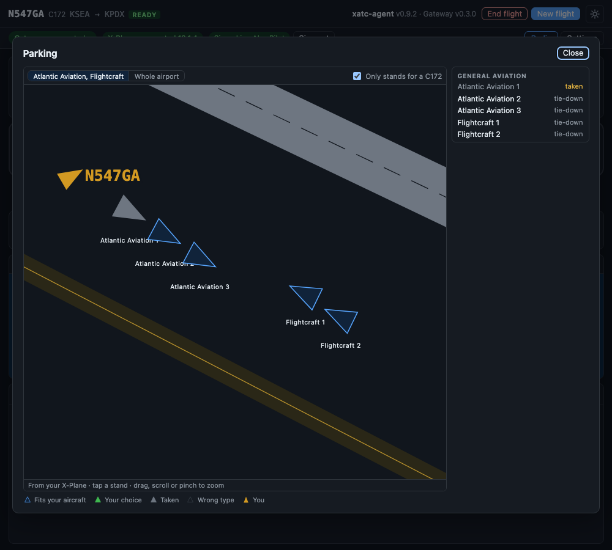

Parking¶
When ATC asks you to "say parking", the window shows what you can answer.
It happens with Approach at a large airport, with Tower after you leave the runway, or with Ground on the taxi-in. The Parking card comes to the front of the card slot.
What you can say¶
- Names, as big buttons first: "Atlantic Aviation", "FBO", "GA". These are the names a pilot would say on the radio.
- Gates and stands, grouped by kind: airline gates by concourse, general aviation, cargo, and the rest. A large airport gets a search box.
Tap one and the card copies the words to say: "parking Atlantic Aviation". Then say them on the radio. Picking something in the window sends nothing to ATC: you still ask by voice.
The card goes away once ATC has your parking, when the flight ends, or with Close.
The parking map¶

The parking map, opened full size, on demo scenery: the stands that fit a C172, one of them taken, and your own aircraft taxiing in.
Above the lists, the card draws your destination from your own X-Plane scenery:
- the runways with their numbers and the taxiways with their letters,
- every stand as an arrow pointing the way the nose goes,
- your aircraft, when you are at or near the airport.
Stands that take your kind of aircraft (piston, turboprop, jet or heavy jet, as the scenery lists them) are blue. Only stands for your type, on by default, hides the others. A stand that another aircraft in your X-Plane is sitting on is grey and says taken. You can still pick it, and ATC may tell you it is occupied.
Drag, scroll or pinch to zoom; stand names appear once you are zoomed in. The buttons above the map jump to the ramps that have stands for you. Bigger map opens it in the full window.
Tap a stand, on the map or in the list, and the card shows its name, its kind, whether it is free, and the words to say, with Copy the words.
Everything on the map comes from the X-Plane files on your PC and works offline.
What Ground does with it¶
- A parking you name is where the taxi-in ends: a gate, an FBO by name, or "general aviation".
- Name nothing and Ground picks a general parking for you.
- If Ground cannot find what you named, it says so and taxis you somewhere sensible.